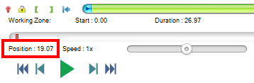
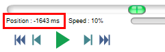
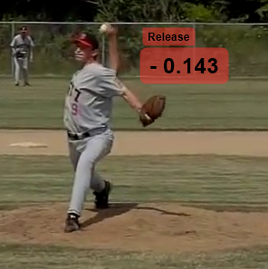
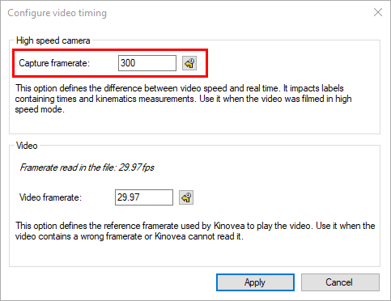

Measuring time¶
Time position¶
The current time position is visible under the main timeline.
Time unit¶
The time unit can be changed from the menu or from . The following options are available:
Format |
Example |
Description |
|---|---|---|
[h:][mm:]ss.xx[x] |
1:10.48 |
Textual timecode. |
Frame number |
1762 |
Rank of the current frame. |
Total milliseconds |
70480 ms |
Integer number of milliseconds. |
Total microseconds |
1284 µs |
Integer number of microseconds. |
Ten thousandth of an hour |
904 |
Ten thousandths of an hour |
Hundredth of a minute |
542 |
Hundredths of a minute |
[h:][mm:]ss.xx[x] + Frame number |
1:10.48 (1762) |
Note
The configured time unit is used for the time position and duration, the clock and stopwatch tools, and when exporting to spreadsheets. The kinematics dialog always uses total milliseconds as the time unit.
Time origin¶
Times displayed are relative to the time origin defined for the video. By default the time origin is at the begining of the video but you can change it in order to display times relative to a particular event of the video; such as a ball impact, a jump take-off, a release point, a race start, etc.
Video positions before the time origin have negative times.
The time origin can be changed manually by using the time origin button or by right clicking the image and selecting . The current video frame becomes the time origin.
Relative clock¶
To annotate the video with the current video time use the clock tool  .
.
By default a clock object simply displays the current video time using the global time origin. Each clock tool may also have its own custom time origin independent from the global one. To define a custom time origin Right click the clock tool and choose .
The clock object can be identified by name by using the menu and changing the object name in its configuration dialog.
Time intervals¶
To measure a time interval use the Stopwatch tool  .
.
To measure the time elapsed between two points of the video follow these steps:
Add a stopwatch object to the video.
Move to the start of the interval, right click the stopwatch object and choose .
Move to the end of the interval, right click the stopwatch object and choose .
In order to measure multiple time intervals you must add several stopwatch objects.
Time scale¶
Videos filmed with high speed cameras or in high speed mode can have a video frame rate different from the capture frame rate. For example a video filmed at 1000 fps is typically saved with a “standard” playback rate of 30 fps. This makes the final video appear in slow motion even when the speed slider is set to 1x.
In this case it is important to tell MotionON about the original capture frame rate for times to be correct. This impacts time positions and time intervals.
Open the video timing dialog from menu and in the top part of the dialog, enter the capture frame rate.
Note
When capturing videos with MotionON this option is automatically set based on information found in the KVA file saved next to the recording.